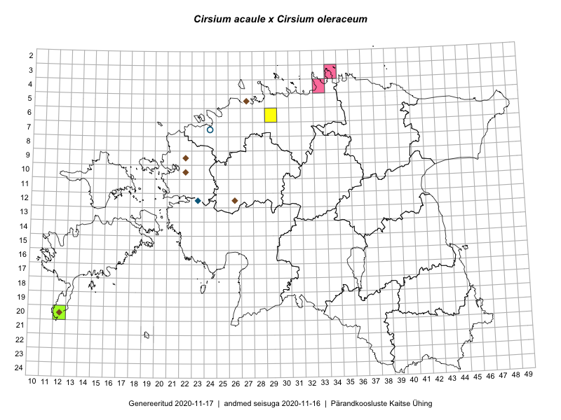

Cirsium acaule × Cirsium oleraceum — varretu ohakas × seaohakas
Asteraceae :: Cirsium acaule ×oleraceum (4)

Kaart põhineb 15 kirjel:
vaatlusi 1
herbaareksemplare 3
PKÜ kirjeid1 8
ELFi kirjeid2 3
Taime kaasaegsed ja ajaloolised leiukohad asuvad 12 ruudus.
Tingmärgid ja ruutude arvud periooditi (U3 / V4 )
█ 2006–2020 (6/–)
◆/◇ 1971–2005 (6/0)
○ 1921–1970 (1/0)
+ kuni 1920 (0/0)
× hävinud (–/0)
? kaheldav (–/0)
| Ruut | Leidja(d) | Leiuaeg | Kirje |
|---|---|---|---|
| 06-29 | Toomas Kukk, Sander Laherand | 2016-08-29 | ruut/ala: Cirsium acaule ×oleraceum |
| 20-12 | Mari Reitalu, Sirje Azarov | 2016-08-08 | TAA0137728: Cirsium acaule ×oleraceum |
| 20-12 | Mari Reitalu, Sirje Azarov | 2016-08-08 | TAA0137729: Cirsium acaule ×oleraceum |
| 07-24 | Taimi Piin, H. Ting | 1960-08-04 | TAA0148352: Cirsium acaule ×oleraceum |
| 11-35 | Kertu Lõhmus, Maarja Kukk | 2009-09-11 | ELF: 12099 |
| 23-42 | Meelis Sepp, Liis Kuresoo | 2009-06-30 | ELF: 13001 |
| 23-42 | Meelis Sepp, Liis Kuresoo | 2009-06-30 | ELF: 13002 |
| 12-26 | 2000-08-25 | PKÜ: 3015 | |
| 05-27 | 2000-10-06 | PKÜ: 4662 | |
| 09-22 | 2000-08-20 | PKÜ: 2798 | |
| 12-23 | 2000-07-29 | PKÜ: 2372 | |
| 03-34 | 2011-08-28 | PKÜ: 17019 | |
| 10-22 | 1999-08-02 | PKÜ: 913 | |
| 04-33 | 2009-08-29 | PKÜ: 15437 | |
| 20-12 | 2002-08-25 | PKÜ: 10589 |
Pärandkoosluste Kaitse Ühingu (PKÜ) andmebaas sisaldab inventeeritud koosluste kirjeldusi ja liigiloendeid. Kõige enam on andmeid niidutaimede kohta.↩︎
Eestimaa Looduse Fondi (ELF) andmebaas sisaldab inventeeritud koosluste kirjeldusi ja liigiloendeid. Eriti rohkesti on andmeid märgalade kohta.↩︎
Ruutude arv uue atlase andmekogu järgi. Muuhulgas arvestab vanemat herbaariumi, 2005. aasta atlase välitöölehtedelt uuesti digitaliseeritud andmeid jne. Uue atlase andmekogust pärinevad andmed on kaardile kantud siniste sümbolitega.↩︎
Ruutude arv 2005. aasta atlase (Kukk, T., Kull, T., Eesti taimede levikuatlas. Eesti Maaülikool, Põllumajandus- ja Keskkonnainstituut, Tartu, 2005) järgi. Andmeallikana on kasutatud levik.exe programmi, kus igas ruudus on registreeritud vaid uusim leid. Seetõttu on vanemate perioodide kohta andmed puudulikud. Kasutatud levik.exe andmestikus leidub mõningaid kõrvalekaldeid atlase trükis ilmunud versioonist, sagedamini tarnade ja käpaliste seas. Lisaks leidub selles andmestikus valik liike (peamiselt väheste leidudega tulnuktaimed), mille kaarte trükis ei avaldatud. Vana atlase andmed ruutudest, milles ei ole uue atlase andmekogus leide enne 2006. aastat, on kaardil esitatud punaste sümbolitega. Vana atlase andmetel hävinud ja kaheldavaid leiukohti pole hilisemate (taas)leidude põhjal korrigeeritud.↩︎